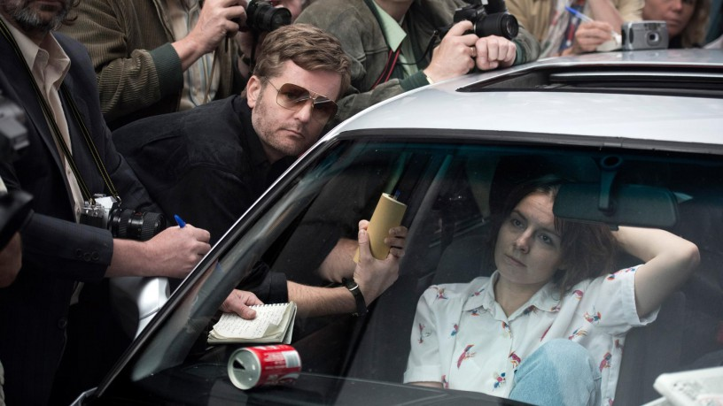

 
 IMDB-Wertung: 7.7 / 10
IMDB-Wertung: 7.7 / 10  Metascore: 0
Metascore: 0 
Jahr: 2018
Dauer: 85 Minuten
FSK:
Land: Deutschland Studio: ARDTonspuren:
Untertitel:
Auflösung: 720p (1280x578) Größe: 1505 MB
Genre: Thriller, Drama, Krimi, TV-Serie
Regisseur: Kilian Riedhof
Drehbuch: MMC Movies
Soundtrack:
Darsteller:
 Alexander Scheer als Dieter Degowski 1 episode, 2018
Alexander Scheer als Dieter Degowski 1 episode, 2018 Ulrich Noethen als Einsatzleiter Recklinghausen 1 episode, 2018
Ulrich Noethen als Einsatzleiter Recklinghausen 1 episode, 2018 Martin Wuttke als Leiter Kripo Bremen 1 episode, 2018
Martin Wuttke als Leiter Kripo Bremen 1 episode, 2018- Jesse Albert als unknown episodes
 Joachim Paul Assböck als unknown episodes
Joachim Paul Assböck als unknown episodes Dirk Borchardt als PHK Schmitz unknown episodes
Dirk Borchardt als PHK Schmitz unknown episodes- André Dietz als unknown episodes
 Marcel Hensema als unknown episodes
Marcel Hensema als unknown episodes Sebastian Hülk als Schürmann unknown episodes
Sebastian Hülk als Schürmann unknown episodes Stephan Kampwirth als Innensenator Bremen unknown episodes
Stephan Kampwirth als Innensenator Bremen unknown episodes- Vinicio Marchioni als Aldo unknown episodes
 Christoph Schechinger als unknown episodes
Christoph Schechinger als unknown episodes Albrecht Schuch als Pressefotograf unknown episodes
Albrecht Schuch als Pressefotograf unknown episodes Tatja Seibt als Großmutter Helene unknown episodes
Tatja Seibt als Großmutter Helene unknown episodes- Sascha Alexander Gersak als Hans-Jürgen Rösner 1 episode, 2018
 Marie Rosa Tietjen als Marion Löblich 1 episode, 2018
Marie Rosa Tietjen als Marion Löblich 1 episode, 2018- Christian Skibinski als Reporter unknown episodes
- Johannes Allmayer als Harald unknown episodes
- Giolina Ardente als Tatiana unknown episodes
- Oliver Bigalke als Kommissar Drasdik unknown episodes
- Lara Brucci als Giuseppina unknown episodes
 Harald Burmeister als Notrufsprecher unknown episodes
Harald Burmeister als Notrufsprecher unknown episodes- Riccardo Campione als Emanuele de Giorgi unknown episodes
- Ralf Dittrich als unknown episodes
- Lilli Fichtner als Ines unknown episodes
- Sven Gerhardt als unknown episodes
 Holger Handtke als unknown episodes
Holger Handtke als unknown episodes- Zsa Zsa Inci Bürkle als Silke Bischoff unknown episodes
- Michael Kamp als unknown episodes
- Amelie Kiefer als Karin unknown episodes
- Marian Kindermann als unknown episodes
- Arnd Klawitter als Redakteur unknown episodes
- Uli Krohm als Großvater Heinrich unknown episodes
- Guido Lambrecht als Polizeihauptkommissar unknown episodes
- Jörg Malchow als unknown episodes
- Jannik Nowak als Wachbeamter unknown episodes
- Gabriele Schulze als ältere Dame unknown episodes
- Dirk Sonnenschein als Reporter unknown episodes
- Frank Stieren als SEK Verbindungsbeamter unknown episodes
- Melanie Tòth als junge Frau im Bus unknown episodes
- Lena Urzendowsky als unknown episodes
Datei: X:\2018(G-M)\Gladbeck (2018, FSK, 1280x578) Teil 1.mkv seit 12.03.2018
Festplatte: HD 2018(G-Z)-2019(A-Z)
 Es gibt insgesamt 138 Filme in der Gruppe '2018(G-M)'
Es gibt insgesamt 138 Filme in der Gruppe '2018(G-M)'
")